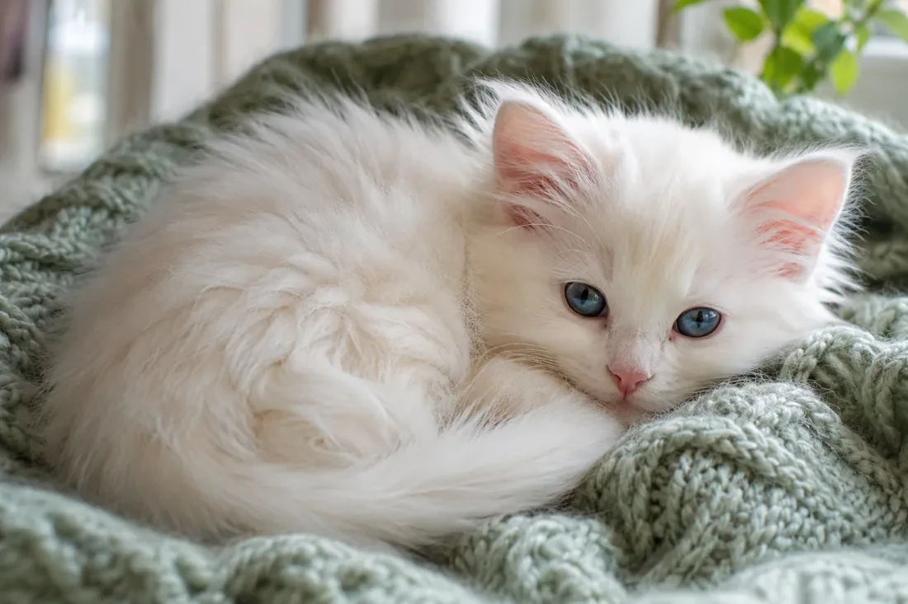

🐾 Cozy Calm
One gentle idea at a time

00:00
24-HOUR CLOCK
Rest
Turn off the lights.
If your room lights are on, switch them off. You can leave a small light on if you prefer.
One gentle idea at a time
